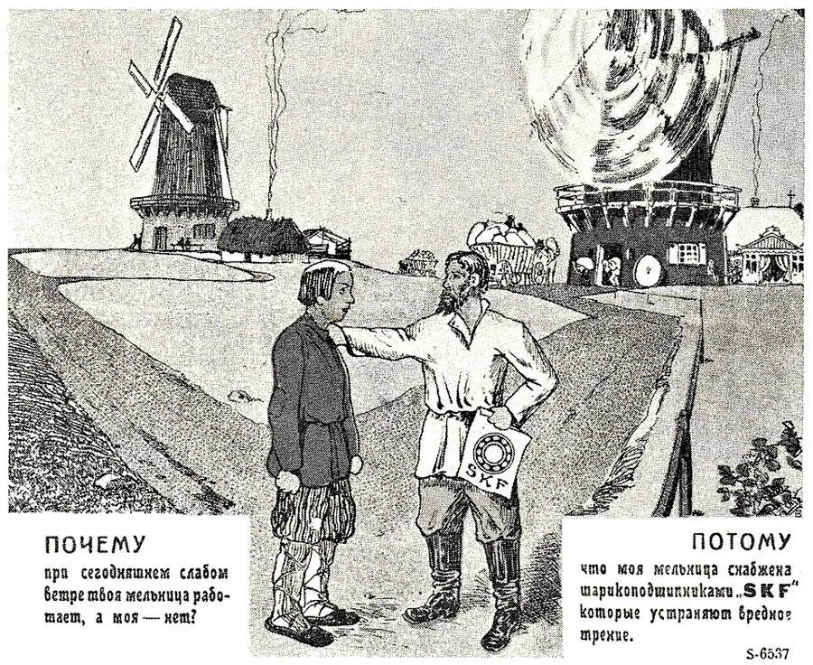
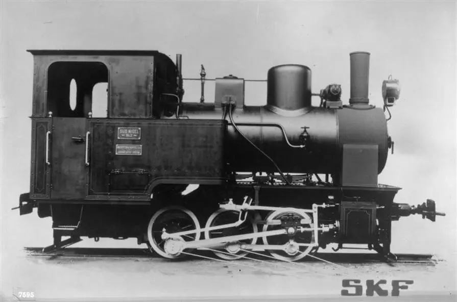
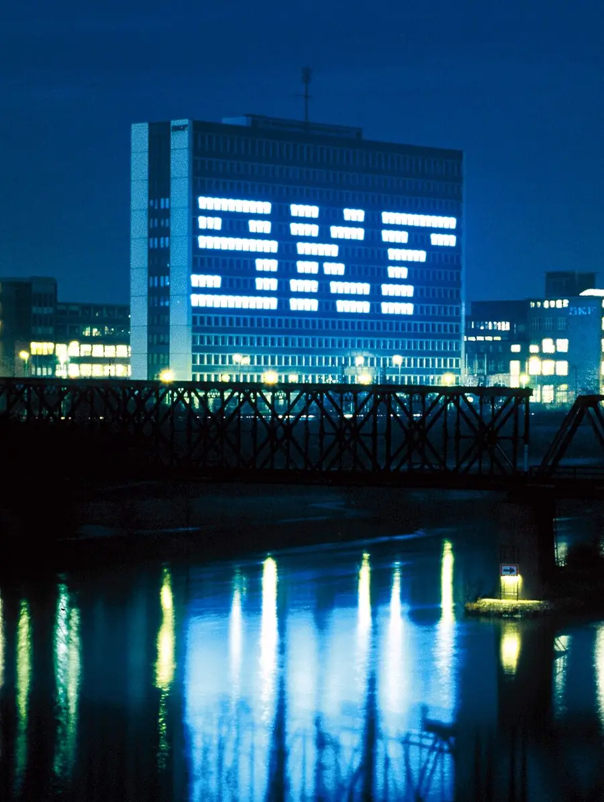

대표 로고대표 브랜드 마크
대표 로고대표 브랜드 마크SKF
SKF는 1907년 스웨덴 예테보리에서 설립된 베어링·씰 제조 기업이다. 베어링, 씰, 윤활 시스템, 정비 제품, 메카트로닉스 제품 등과 관련 서비스를 전 세계에 공급한다.
최종 업데이트
SKF는 어떤 브랜드인가
SKF는 스웨덴의 베어링·씰 제조 기업으로, 정식 명칭은 Aktiebolaget SKF이다. 스웨덴어 이름은 Svenska Kullagerfabriken이며 '스웨덴 볼베어링 공장 주식회사'를 뜻한다.
회사는 베어링, 씰, 윤활 및 윤활 시스템, 정비 제품, 메카트로닉스 제품, 동력 전달 제품, 상태 모니터링 시스템과 관련 서비스를 전 세계에 제조·공급한다. 세계 최대의 베어링 제조업체이며 108개 생산 단위에서 44,000명을 고용한다.
업계에서 가장 큰 산업용 유통망을 갖추고 있고, 130개국에 걸쳐 17,000개 유통 거점이 있다. 스웨덴 최대 기업 중 하나이자 세계 상장기업 상위 2,000곳에 속한다.
SKF는 어떻게 시작되고 성장했나
SKF는 1907년 예테보리에서 설립되었다. Gamlestadens Fabriker AB의 볼베어링 제조 사업을 초기 자본과 출발점으로 삼았으며, 공동 소유주 Axel Carlander와 Knut Johansson Mark가 이사로 이끌었고 Carlander는 1907년부터 1937년까지 초대 이사회 의장을 맡았다.
계기는 엔지니어 Sven Gustaf Wingqvist가 발명한 구면 볼베어링이었고, 그는 SKF의 CEO 겸 기술 책임자로 임명되었다. Wingqvist는 1907년 2월 16일 스웨덴 특허 No.
25,406을 출원했고 특허는 6월 6일 승인되었다. 설립 3년 뒤 직원은 325명이었고 영국에 자회사를 두었으며, 이후 여러 나라에 생산 거점이 세워졌다.
SKF의 브랜드 아이덴티티는 무엇인가
구면 볼베어링과 구면 롤러베어링을 발명한 데서 출발한 세계 최대 베어링 제조업체이다.
SKF의 대표 제품과 서비스는 무엇인가
SKF는 베어링, 씰, 윤활 및 윤활 시스템, 정비 제품, 메카트로닉스 제품, 동력 전달 제품, 상태 모니터링 시스템과 관련 서비스를 공급한다. 대표 발명은 1907년 특허를 받은 다열 자동 조심 볼베어링으로, 바깥 링의 구면 궤도를 두 줄의 볼이 함께 쓰는 구조이다.
이 구조는 안쪽 링이 바깥 링에 대해 자유롭게 정렬되게 해 축의 정렬 불량 문제를 해결했고 잦은 생산 중단을 없앴다. 1917~1919년 연구 엔지니어 Arvid Palmgren은 복열 자동 조심 롤러베어링(구면 롤러베어링)을 발명해 특허를 냈으며, 이 제품의 생산은 지금도 이어진다.
SKF는 지금 어떤 상태인가
SKF는 세계 최대의 베어링 제조업체로, 108개 생산 단위에서 44,000명을 고용한다. 130개국에 걸친 17,000개 유통 거점으로 업계에서 가장 큰 산업용 유통망을 갖추고 있다.
스웨덴 최대 기업 중 하나이며 세계 상장기업 상위 2,000곳에 속한다. 본사는 스웨덴 예테보리에 있다.
SKF 로고는 어떻게 변해왔나
대표 로고대표 브랜드 마크사진으로 보는 SKF의 역사



자주 묻는 질문
SKF는 어느 나라 브랜드인가요?
SKF는 스웨덴의 에너지·산업재 브랜드입니다.
SKF는 언제 설립되었나요?
SKF는 1907년 설립되었습니다.
SKF의 브랜드 아이덴티티는 무엇인가요?
구면 볼베어링과 구면 롤러베어링을 발명한 데서 출발한 세계 최대 베어링 제조업체이다.
SKF의 대표 제품은 무엇인가요?
SKF는 베어링, 씰, 윤활 및 윤활 시스템, 정비 제품, 메카트로닉스 제품, 동력 전달 제품, 상태 모니터링 시스템과 관련 서비스를 공급한다.
SKF는 현재 어떤 상태인가요?
SKF는 세계 최대의 베어링 제조업체로, 108개 생산 단위에서 44,000명을 고용한다.
SKF의 창업자는 누구인가요?
SKF의 창업자는 Sven Gustaf Wingqvist, Assar Gabrielsson입니다(위키데이터 기준).
SKF의 본사는 어디에 있나요?
SKF의 본사는 예테보리에 있습니다(위키데이터 기준).
출처와 검증
SKF 관련 참고: 공식 웹사이트 · 위키데이터 Q52846 · 한국어 위키백과 · 영어 위키백과. 브랜드명은 한글과 원어를 함께 표기하되 데이터에 없는 표기는 만들지 않습니다. 기원 국가·설립연도는 검수된 정의문에서 확인된 값을 우선하고, 없을 때만 공식 웹사이트 URL이 일치하는 위키데이터 개체의 값을 씁니다. 위키데이터 값은 2026-11-11 기준입니다.